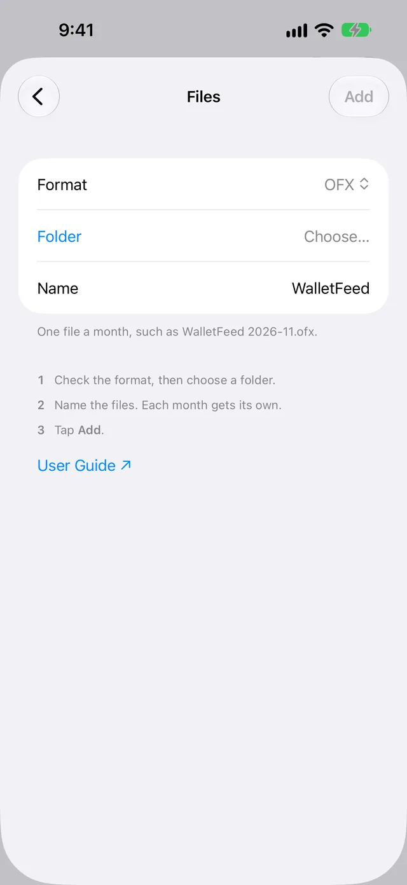

Add Apple Card transactions to Quicken
Quicken Classic has no connection to Apple Card. To add your Apple Card transactions to Quicken, you import a file. Wallet makes a QFX file for one statement or for a period between two dates. WalletFeed saves OFX files for Quicken for Mac in iCloud Drive, with your Apple Card, Apple Cash and Savings transactions.
Download WalletFeed on the App Store
Quicken for Windows cannot import these OFX files. For Quicken for Windows, WalletFeed writes Quicken CSV files.
Connections and files for Quicken
On June 4, 2026, a Quicken moderator wrote in the Quicken Community that a connection to Apple Card “is not an option in Quicken Classic”. The moderator also wrote that you can import your Apple Card transactions with the Web Connect method. Web Connect is the name that Quicken uses for a QFX file.
This table shows the procedures for each Quicken product.
| Quicken product | Procedure | Files |
|---|---|---|
| Quicken for Mac | Import a QFX file from Wallet | One QFX file for each statement or period. You get each file in Wallet. |
| Quicken for Mac | Add an OFX file in WalletFeed | One OFX file for each month. When a transaction in a month changes, WalletFeed writes the file for that month again. |
| Quicken for Windows | Import a QFX file from Wallet | One QFX file for each statement or period. You get each file in Wallet. |
| Quicken for Windows | Add a Quicken CSV file in WalletFeed | One CSV file for each month. WalletFeed writes the file one time, 5 days after the month ends. |
| Quicken Simplifi | Add your Wallet accounts in Quicken Simplifi | No file. You add your Wallet accounts in the Quicken Simplifi app on your iPhone. |
Before you start
For the OFX files from WalletFeed, you must have these items:
- An iPhone with iOS 26 or a newer version
- WalletFeed, with access to your Wallet accounts
- WalletFeed Pro, a subscription with a 1-week free trial, or a one-time Lifetime purchase
- Quicken for Mac
- iCloud Drive on your iPhone and on your computer.
WalletFeed is available only in the US.
Step 1: Add an OFX file in WalletFeed
-
On your iPhone, open WalletFeed.
-
Tap Destinations.
-
Tap + at the top of the screen.

-
In the search field at the top, type
Quicken.
The list shows OFX File and Quicken CSV File. Quicken CSV File is for Quicken for Windows.
-
Tap OFX File.
If you do not have WalletFeed Pro, the WalletFeed Pro screen opens first. After you start the free trial or get a plan, the Files screen opens.
-
Make sure that Format shows OFX.

If Format shows OFX, WalletFeed writes one file for each month.
-
Tap Folder.
-
Select a folder in iCloud Drive.
The Folder row then shows the name of the folder.
-
To use a different name for the files, type the name in Name.
If you do not change the name, the file for October 2026 is
WalletFeed 2026-10.ofx. -
Tap Add.
-
When WalletFeed shows Save Transactions to Files?, tap Save.
The message gives the name of the folder, the data that the folder receives and the Wallet accounts. If there is a start date for the transactions, the message also gives that date. Because an OFX file has only posted transactions, the message uses the words “posted transactions”. If you tap Cancel, WalletFeed removes the new destination.
WalletFeed then writes a file for each month that has posted transactions. In Destinations, the new destination has the name WalletFeed or the name that you typed.
Step 2: Import a file into Quicken for Mac
Quicken for Mac uses the same menu item for a WalletFeed OFX file and for a file from the website of a bank.
- On your Mac, open Quicken.
- Make a backup of your Quicken data file.
- Click File › Import › Bank or Brokerage File (OFX, QFX).
- Click Browse.
- In the iCloud Drive folder that you selected in WalletFeed, select the file for one month, for example
WalletFeed 2026-10.ofx. - Click Open.
- On the Choose Your Accounts screen, select the Quicken account that receives the transactions, for example your Apple Card account.
- Make sure that the new transactions are in that account.
- To import the file for a different month, do steps 3 to 8 again.
For more information about these steps, refer to Quicken's instructions to download and import transactions.
Import a QFX file from Wallet
Wallet makes a QFX file of your Apple Card transactions for one monthly statement, or for a period between two dates. For this procedure, WalletFeed is not necessary. Apple gives the steps for Wallet in Download your Apple Card statements or export your transactions.
Get a QFX file for one statement
-
On your iPhone, open the Wallet app.
-
Tap your Apple Card.
-
Tap Card Balance.
-
Scroll down to the monthly statements.
-
Tap the statement.
-
Tap Export Transactions.
-
Select the QFX file format.
In Quicken's instructions for Apple Card, the name of this format is Quicken Financial Exchange (QFX).
-
Send the file to your Mac, for example with AirDrop, or save the file in the Files app.
Get a QFX file for a period
- On your iPhone, open the Wallet app.
- Tap your Apple Card.
- Tap Card Balance.
- Below Statements, tap Export Transactions.
- Select a start date and an end date.
- Select the QFX file format.
- Tap the done button.
The file must be in a location that your Mac can open, for example iCloud Drive.
You can also get the file for a period on a computer:
- On your computer, open card.apple.com.
- Go into your account with your Apple Account.
- Click Statements.
- Click Export Transactions.
- Select a start date and an end date.
- Select the QFX file format.
- Click Export.
Import the QFX file into Quicken for Mac
- On your Mac, open Quicken.
- Make a backup of your Quicken data file.
- Click File › Import › Bank or Brokerage File (OFX, QFX).
- Click Browse.
- Select the QFX file.
- Click Open.
- On the Choose Your Accounts screen, select the Quicken account that receives the transactions.
- Make sure that the new transactions are in that account.
Quicken's instructions tell you not to import transactions for the same dates two times. Thus, do not select a period that has the dates of a file that you imported.
Quicken validates each Web Connect file with its online services. In Web Connect Troubleshooting, Quicken tells you that Web Connect files are not available after your Quicken subscription expires.
For Quicken for Windows, refer to Import a QFX file from Wallet in the guide for Quicken for Windows.
WalletFeed does not write QFX files
A QFX file is a Web Connect file from a financial institution, and Quicken validates each Web Connect file with its online services. Quicken also tells you that it does not support QFX files from “third-party conversion software”. WalletFeed is not a financial institution. Thus, WalletFeed does not write QFX files.
For Quicken for Mac, WalletFeed writes OFX files, because the menu item Bank or Brokerage File (OFX, QFX) also imports OFX files. For Quicken for Windows, WalletFeed writes Quicken CSV files, because Quicken for Windows cannot import OFX files but has a CSV import.
Quicken Simplifi
Quicken Simplifi is a different Quicken product. It connects to the accounts in Wallet on your iPhone, and your Apple Card is one of these accounts. For this connection, WalletFeed is not necessary.
Quicken gives these steps in How to Add Your Apple Wallet Accounts:
- On your iPhone, open the Quicken Simplifi app.
- Tap Menu (the icon with three lines).
- Tap Accounts.
- Tap + at the top right of the screen.
- Tap Apple Wallet.
- Tap Continue.
- Give Quicken Simplifi access to your Wallet accounts.
- Select the accounts for Quicken Simplifi.
- Tap Continue.
- Tap Confirm.
Quicken tells you that this connection is available only on iPhone. After you add the accounts on your iPhone, the Quicken Simplifi web app also shows them.
Quicken for Windows
Quicken for Windows cannot import the OFX files from WalletFeed. It imports QFX files (Web Connect files), and Wallet makes a QFX file of your Apple Card transactions. Refer to Import a QFX file from Wallet. WalletFeed does not write QFX files.
For Quicken for Windows, WalletFeed writes a Quicken CSV file for each month, in the format of the Quicken CSV import. Refer to Import Apple Card transactions into Quicken for Windows.
WalletFeed can also write QIF files. But Quicken for Windows cannot import a QIF file into a credit card account, a checking account or a savings account.
Data that Quicken receives
This table shows the data in the OFX file for each Wallet field.
| Wallet | In the OFX file |
|---|---|
| Merchant | The first 32 characters of the name of the payee. If Wallet has no merchant name, WalletFeed uses the description. |
| Amount | The amount of the transaction. Purchases are less than zero. Payments and refunds are more than zero. |
| Currency | The currency of the statement, for example USD. |
| Date | The date of the transaction. |
| Posted date | The date that the transaction posted. |
| Type | The type of transaction, for example a purchase, a payment, a fee or a transfer. |
| Description, card statement text and foreign amount | The memo. WalletFeed does not add text that is the same as the name of the payee. |
| Merchant category code | The code from the card network, for example 5812. |
| Original currency | For a transaction in a different currency, the currency code and the exchange rate. The amount stays in dollars. |
| Transaction ID | The ID of the transaction. It stays the same each time that WalletFeed writes the file. |
| Account | A different statement for each of your accounts. The account type is credit card for Apple Card, checking for Apple Cash and savings for Savings. |
The file does not include the WalletFeed category or the balance of the account.
Changes to the files
While WalletFeed is open, the files receive changes in seconds. When WalletFeed is not open, iOS starts WalletFeed approximately 1 hour or less after a change in Wallet. If Background Sync is on in Settings › Sync, WalletFeed then updates the files.
If WalletFeed cannot open the folder at that time, the files get the changes when one of these occurs:
- You open WalletFeed.
- A Shortcuts automation starts WalletFeed.
- iOS starts WalletFeed while your iPhone is on its charger.
An OFX file has only posted transactions. WalletFeed adds a pending charge to the file after the charge posts. A declined charge does not post, and thus it is not in the file. A refund is a different transaction. Its amount is more than zero.
WalletFeed puts each transaction in the file for the month of the transaction date. When a transaction in a month changes, WalletFeed writes the file for that month again. Thus, a file can change after the end of its month, for example when a charge from the last day of that month posts.
Each transaction keeps the same ID each time that WalletFeed writes the file. But Quicken's instructions tell you not to import transactions for the same dates two times, because Quicken can then show a transaction two times.
If Wallet removes a transaction from this month or the previous month, WalletFeed removes it from the file. WalletFeed cannot remove the transaction from Quicken.
WalletFeed keeps no copy of the files. The files are in your iCloud Drive. WalletFeed has no account, and no WalletFeed server keeps your transactions or keys.
Send previous transactions
A new OFX File destination also receives previous transactions from the start date in Settings › Sync › Initial History. Initial History is All until you change it. To change the start date, do these steps before you add the destination:
-
In WalletFeed, tap Settings (the gear button) at the top of the screen.
-
In Sync, tap Initial History.

-
Select Today, 30 Days, 90 Days, 1 Year or All.
After you add a destination, you can use Send History to write previous transactions to its files:
-
In Destinations, tap the destination, for example WalletFeed.
-
Tap Send History.
-
Select 30 Days, 90 Days, 1 Year or All.
Then WalletFeed writes the files for those months again. While WalletFeed writes the files, the destination shows Sending History and a progress bar.
-
In Quicken, import the files for the months that you did not import.
To stop before WalletFeed writes all the files, tap Send History › Stop Sending.
Change or remove the destination
- In WalletFeed, tap Destinations.
- Tap the destination, for example WalletFeed.
- Make one of the changes in this table.
| Change | On the destination screen |
|---|---|
| Send only some transactions | Set Filter to on. Then set Include, Minimum, Accounts, Categories or Exclude. |
| Send only the transactions from one Wallet account, for example Apple Card | Set Filter to on. Tap Accounts. Then select the account. |
| Use a different folder | Tap Change Folder. Then select the folder. From the start date of the destination, WalletFeed writes the files again in the new folder. |
| Stop the changes to the files for a time | Set Enabled to off. |
| Change the name of the destination | Type a different name in Name. The names of the files stay the same. |
| Remove the destination | Tap Delete. Then tap Delete again. |
When you remove the destination, the files stay in the folder. Quicken keeps the transactions that you imported.
If there is a problem
If WalletFeed shows “Couldn't open this folder.”
WalletFeed cannot get access to the folder that you selected on the Files screen.
- Tap Folder.
- Select a different folder in iCloud Drive.
If the destination shows “Can't open the folder. Choose it again.”
WalletFeed does not have access to the folder of the destination at this time.
- In Destinations, tap the destination.
- Tap Change Folder.
- Select the folder again.
If the folder has no file for a month
WalletFeed writes a file for a month only when the month has posted transactions.
-
In Destinations, tap the destination.
-
Tap Send Test.
The folder then gets
WalletFeed Test.ofx. This file has a test purchase of $4.20. If this file is in the folder, WalletFeed can write files to the folder. -
Do not import
WalletFeed Test.ofxinto Quicken.
If the file does not have new transactions
WalletFeed did not write the file after the last change in Wallet.
- On your iPhone, open WalletFeed.
- Tap Settings (the gear button) at the top of the screen.
- In Sync, tap Sync Now.
If a pending charge is not in Quicken
An OFX file has only posted transactions. WalletFeed adds the charge to the file after the charge posts.
- Wait until the charge posts in Wallet.
- Import the file for that month again (refer to Step 2).
- If Quicken then shows a transaction two times, delete one of the two transactions.
If Quicken shows a transaction two times
Quicken imported the same transaction two times, for example when you imported the file for a month two times.
- In Quicken, delete one of the two transactions.
If Quicken has a transaction that Wallet removed
WalletFeed removes the transaction from the file, but it cannot remove the transaction from Quicken.
- In Quicken, delete the transaction.
If Quicken for Windows does not import the OFX file
Quicken for Windows cannot import the OFX files from WalletFeed.
- Add a Quicken CSV file in WalletFeed (refer to Import Apple Card transactions into Quicken for Windows).
If Destinations shows “Sync Requires Pro”
You do not have WalletFeed Pro at this time. WalletFeed keeps the destination but does not write the files.
- In Destinations, tap Upgrade.
- Get a plan, or tap Restore Purchases.
 Scan with your iPhone
Scan with your iPhone
Related
Updated November 26, 2026